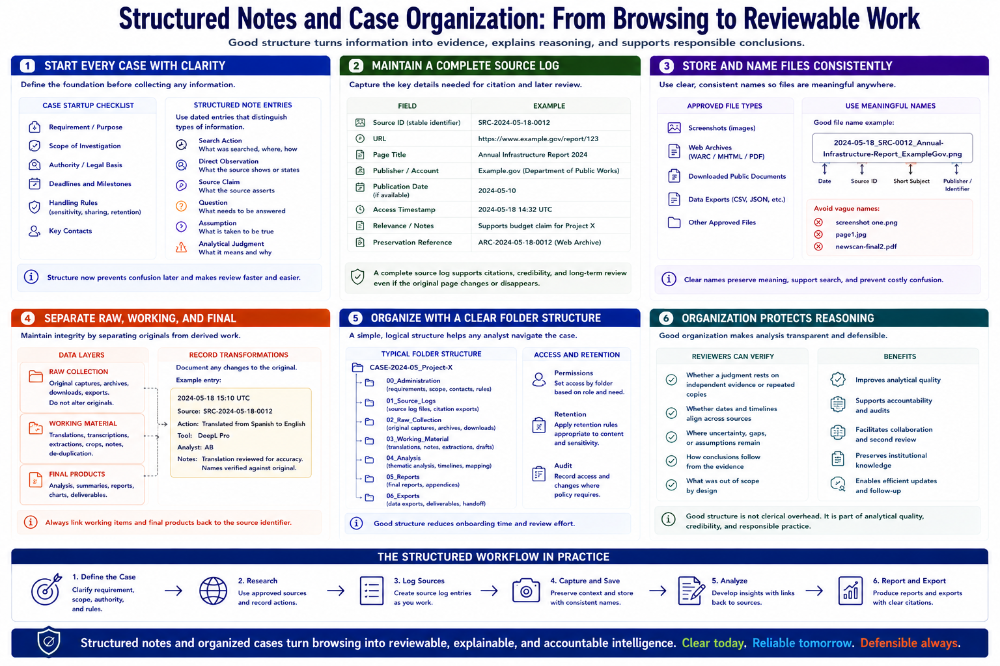

Notes, Evidence, and Case Organization
Connecting to LMS... Progress: in progress

Narration
Structured notes turn browsing into reviewable work. Begin each case with the requirement, scope, authority, deadlines, and handling rules. Use dated entries that distinguish search actions, direct observations, source claims, questions, assumptions, and analytical judgments.
A source log should record a stable source identifier, URL, page title, publisher or account, publication date when available, access timestamp, relevance, and preservation reference. This allows citations and later review even if the page changes.
Store approved screenshots, archives, and downloaded public documents with consistent names. A useful convention may include date, source, short subject, and identifier. Avoid names such as screenshot one that lose meaning outside the analyst's desktop.
Separate raw collection from working material and final products. Preserve originals when integrity matters, record transformations such as translation or cropping, and link summaries or extracted facts back to the source identifier.
Folder structures should be simple enough that another analyst can navigate them. Typical areas include administration, source logs, raw collection, working notes, analysis, reports, and exports. Access permissions and retention may differ across these areas.
Case organization protects reasoning. It lets reviewers see whether a judgment rests on independent evidence or repeated copies, whether dates align, and where uncertainty remains. Good structure is not clerical overhead; it is part of analytical quality and accountability.